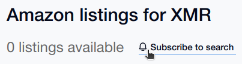
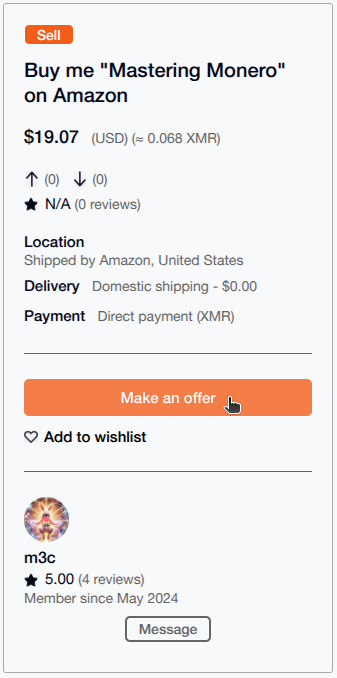
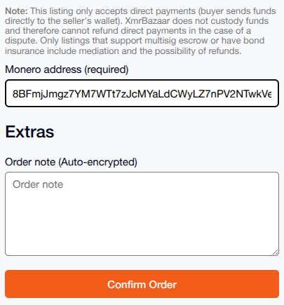
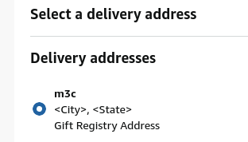
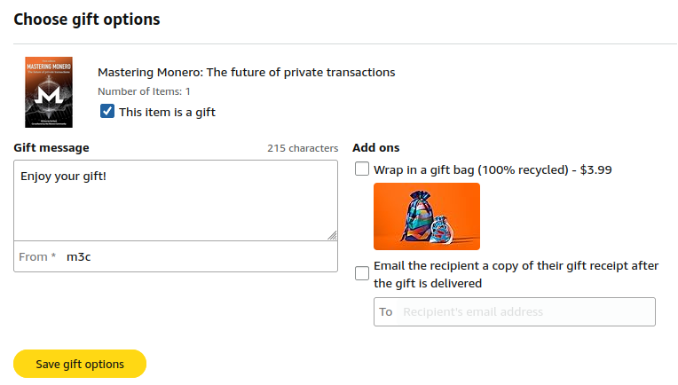
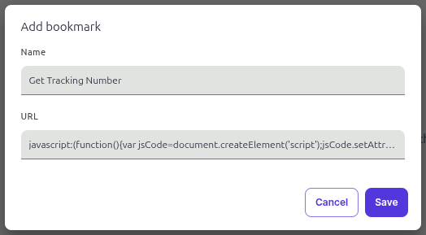
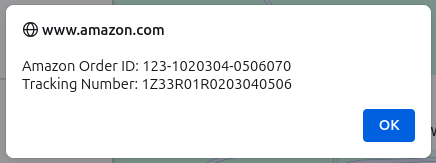

Earn Monero
Below are steps to find listings on XMR Bazaar and purchase product via Amazon with fiat to receive non-KYC Monero. You only need to purchase the item and supply tracking information. Once the item is delivered, you'll receive the agreed amount of Monero.
Search for Amazon items on XMR Bazaar
You can look for titles like "Buy me ... on Amazon", or search this section for "Amazon" or "Wishlist" to find listings where you can earn Monero for purchasing on Amazon. 
You can also "Subscribe to Search" to add to your "Saved Searches"
Make an Offer
When you find a item that fits your needs (the amount you want to spend). Click "Make an offer".
Confirm Order
Enter your Monero address and click "Confirm Order" to lock in your Monero amount at the current market price.
Purchase Items
Visit the link and add the items to your Amazon cart. When adding to your cart...
- Verify they are for the proper user's wishlist (i.e. "For m3c's Wish List").
- Make sure all the items have "This is a gift" checked
- Verify the expected quantities and price of each item.
Select Gift Registry address
When checking out at Amazon. Be sure to select the user's Gift Registry Address. Amazon may default to *your* address, so make sure it will be shipped to the user's address, and not to yourself.
Also verify the gift options during checkout. You may want to delete your real name and enter your XMR Bazaar username.
"Email the recipient a copy of their gift receipt" is not necessary, so no need to share email. Checking "This item is a gift" will include a paper copy with the package.
Place Order
Login to XMR Bazaar and message the shopper that the order was placed and include the order number and estimated delivery date.
Provide Tracking
First, save a custom "bookmarklet" by right-clicking the following link (Get Tracking Number) and add to your bookmarks.
If you don't have an option to right-click "Bookmark Link...", use right-click "Copy Link..." then add a new bookmark in your browser's Bookmark Manager (paste the link to create the bookmark).
With the bookmarklet in your bookmark list, Go to your Amazon Orders page and select "Track Package" to view shipping status. Then click the ("Get Tracking Number") bookmarklet from your bookmarks. You should see a popup that contains the Amazon Order & Tracking Number.
Paste these numbers into an XMR Bazaar message to the shopper.
Note : Once the bookmarklet is in your bookmarks, it can be used for future orders.
Confirm Delivery
Once delivered, the shopper should send Monero to your address. If you determine the package was delivered, but haven't received your Monero, contact the shopper. This is also an opportunity to rate the shopper based on the timeliness of their payment.